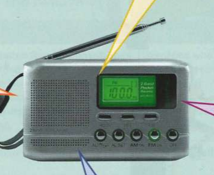

Tội phạm và hình phạt
Tội phạm
Carlos và Ayse đang thảo luận về một hành vi phạm pháp tại nơi làm việc. Đọc đoạn hội thoại và lưu ý các thành ngữ. Tất cả các thành ngữ họ sử dụng đều mang sắc thái thân mật (informal).
Hình phạt
Hôm nay chúng tôi muốn nghe ý kiến của các bạn về cảnh sát và hình phạt trong thế giới ngày nay. Liệu the long arm of the law1 (lực lượng hành pháp) có đang làm tốt nhiệm vụ của mình?
The boys in blue8 (phía cảnh sát) nên tuyển dụng thêm những tội phạm đã cải tà quy chính. Không có gì hiệu quả hơn một poacher turned gamekeeper9 (kẻ săn trộm trở thành người gác rừng)!

Họ quá nhanh chóng trong việc throw the book at2 (áp hình phạt tối đa với) người khác. Tại sao lại phải do a stretch3 (ngồi tù một thời gian) chỉ vì một vi phạm nhỏ? Doing time4 (chấp hành án tù) chỉ làm người ta dễ tái phạm tội hơn khi được thả tự do.
Tôi nghĩ những người phạm tội trẻ tuổi nên luôn bị brought to book5 (bị trừng phạt nghiêm khắc). Một biện pháp trừng phạt short sharp shock6 (nghiêm khắc tức thì) sẽ giúp họ đi đúng the straight and narrow7 (con đường lương thiện) trong tương lai.